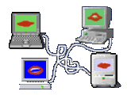
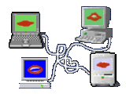

>SIDE CONTENT: How it’s still capitalism aka "Web3".
A short observation and discussion on the difference between Web 3.0 and Web3, amongst other things.

So, cryptocurrency and blockchains. That’s a crazy thing to jump into suddenly when what I was discussing at first was mostly about how much the internet has changed to the point that privacy is no longer an option and how it relates to us and what not. A mouthful of a topic, I imagine, and a lot more confusing now that there’s a quick tangential discussion about how this form of currency that was supposed to remove ourselves from the control of capitalism actually is… well… capitalistic in nature.
Okay, let me actually clarify what I mean with “the control of capitalism”, because it’s a bit too broad of a term. A big selling point to cryptocurrency is the fact that, unlike the money we use on a daily basis, it isn’t being controlled by one large entity—this being central banks and the government, which have full control over how much money is thrown out into the world, and this means they have full control over the value of the currency in the end. What cryptocurrency (shortening to “crypto”) is trying to do is make it that the people (aka you and me as users of the internet) are the ones that control the value of a currency rather than the powerful bankers and so forth. This means that, depending on how much we utilize the crypto coin, we can practically become millionaires in a manner of days. It’s kind of like playing the stock market in this case, however a key difference between the stock market and crypto is that crypto is volatile, meaning that there’s a bigger chance of losses, scams, and overall more bad news compared to the stock market that are more “secure” and “stable” (Don’t think about the many stock market crashes or the bursting bubbles that have occurred over the last decades…)

Alright. We now know a bit about what a cryptocurrency is. To keep it simple; blockchain is just the database where crypto exists, they usually explain it in an overly complicated way, but that’s the general gist of it. Anyways. Now we know what all of these are, let’s try to make sense of things:
Web3, the new context that Web3.0 took when people realized that Web2.0 was becoming impossible to use because of restrictions set by those in power. However, Web3 took it from being completely AI driven as Berners-Lee wanted it to be, and made it into the fully anonymous experience of decentralized networking and what have you. That’s a summary of it all, of course, but that’s the gist of it.
People wanted to take back control, both with their data and also with their own finances, whilst utilizing new technology only known to exist in movies and TV, such as virtual realities (put a pin in this, it’ll come back up.) However, this prospective idea for the future wasn’t being helmed by people actually interested in giving the average person a livable income through a new currency, but by companies and individuals who were already beyond rich and simply wished for more (an opinion, however a rather real one.)
Like, try looking up anything about Web3 on Google—hell, just search-up “Web3” on Google; Yes, you’ll find information about it, and what it’s about, however the first thing you’ll also notice is the immediate mention of crypto, NFTs (non-fungible token: basically a digital item that you “own” and this digital item can’t be replicated, meaning if there’s just one of it and you bought it, then you—and only you— “own” it), the metaverse, investing, etc. They’re already trying to sell the concept of currency; of stock; of a new reality where you have what you don’t in real life, because that’s what Web3 is about in the eyes of people who are only focused on the profitability of something, and not in the long-term usage outside of a profit build up.
It’s a “get rich quick” scheme, it’s a “invest in this start-up so when it takes off you get your money back and uh oh! There goes your life’s savings!”, it’s just a new form of monetary predatory practice that has begun to dig its claws deeper into the skin of the unsuspecting users who are now lulled into this like an Oasis in the desert, or like a Siren’s call. Web3 doesn’t exist for us to experience the joys of the internet with no concerns of our information being stolen and misused, it exists to generate money. Okay, well, that’s more of an opinion rather than a stated fact, however with the most consistent thing about Web3 being “invest in crypto”, it’s hard to say that it isn’t just capitalism made prettier with a new fresh coat of paint.